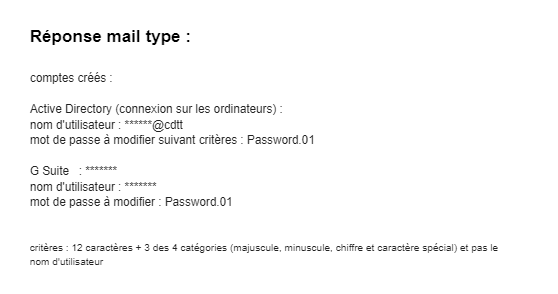

Mettre a disposition les outils informatiques aux nouveaux collaborateurs

De nouveaux collaborateurs sont régulièrement recrutés. Il est important d'accompagner les utilisateurs dans la mise en place d'un service. Il est nécessaire de comprendre leur besoin et de fournir tous les outils nécessaires à la pratique de leur activité.
À chaque nouveau recrutement, nous devons fournir à l’utilisateur le matériel ainsi que les accès nécessaires à son activité. Cela passe par la réception des colis, l’inventaire de toutes les ressources mise à disposition, ainsi que, si nécessaire, par la mise en place d’un planning de distribution. Il faut :
Chaque utilisateur dispose d'un compte google, ainsi que d'un identifiant active directory, certain peuvent être amenés à utiliser des applications supplémentaires (OpenVPN, proscope, Sage, Solidworks, ...)

Afin de ne pas laisser des personnes n’ont habilités, les prises murales ne sont pas brassées, par défaut. Lors de l’arrivée d’un nouveau collaborateur, il est nécessaire de brasser la prise en question afin d’interconnecter la machine au réseau.
Nous utilisons la téléphonie VOIP, tous comme les machines, il faut brasser les téléphones en conséquence, des switchs Alcatels permettent la distribution. Suivant les besoins, nous pouvons attribuer des numéros SDA au personnel ayant besoin d'être joint depuis l'extérieur, nous nous référons au tableau suivant :
Nous utilisons OMC, il s’agit d’un outil d’administration et de configuration de l’Alcaltel-Lucent OmniPCS Office Communication Serveur, cette application permet de programmer la messagerie vocale, l’attribution des numéros, le transfert de ligne, ...
L'accompagnement est un enjeu important dans la formation des utilisateurs, voici une documentation que j’ai réalisé pour servir d'illustration :